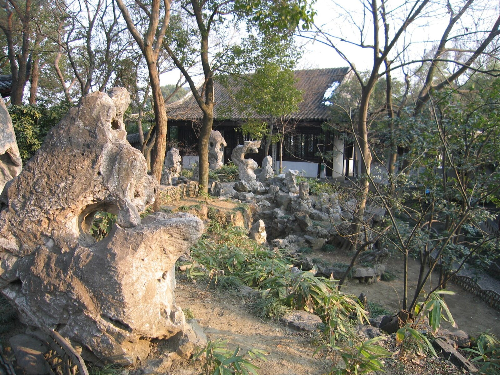
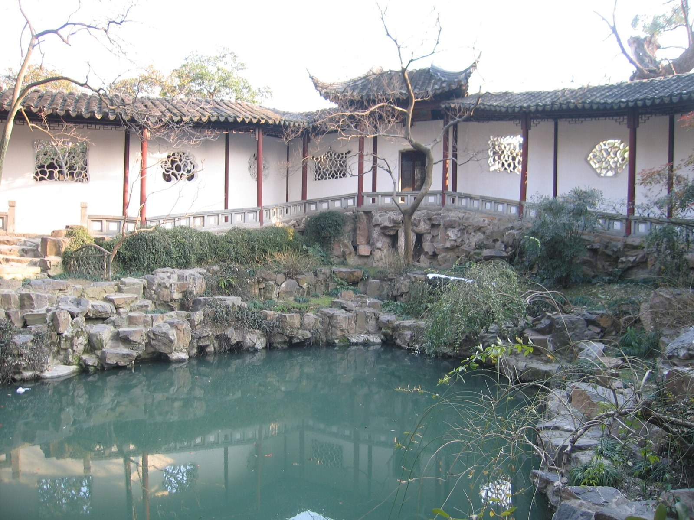
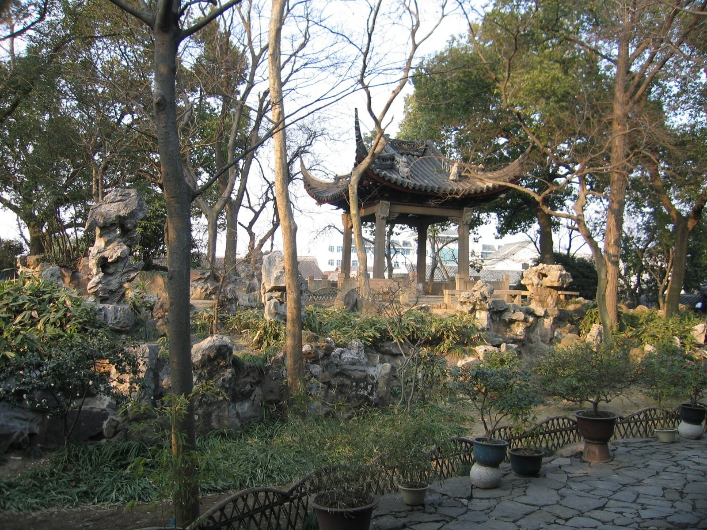
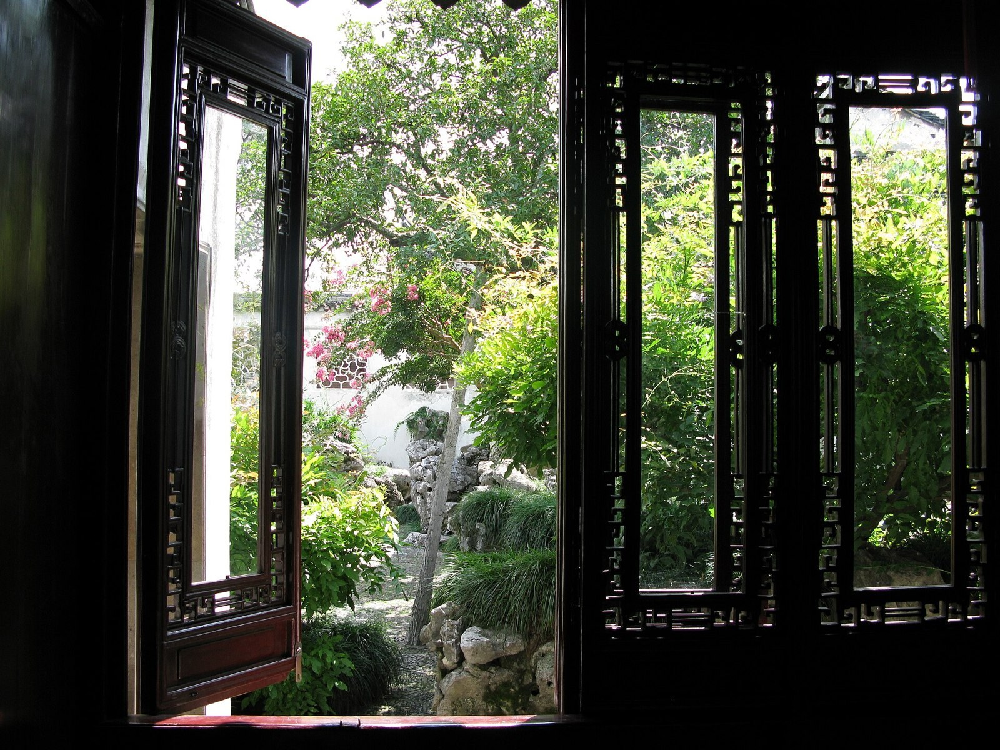
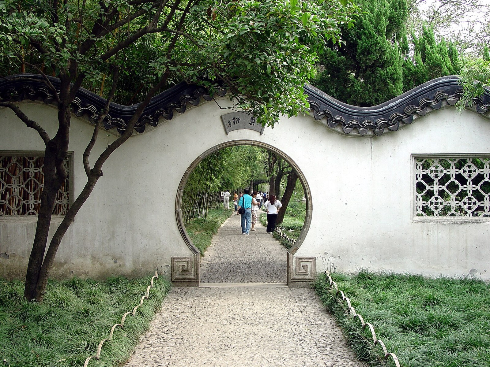
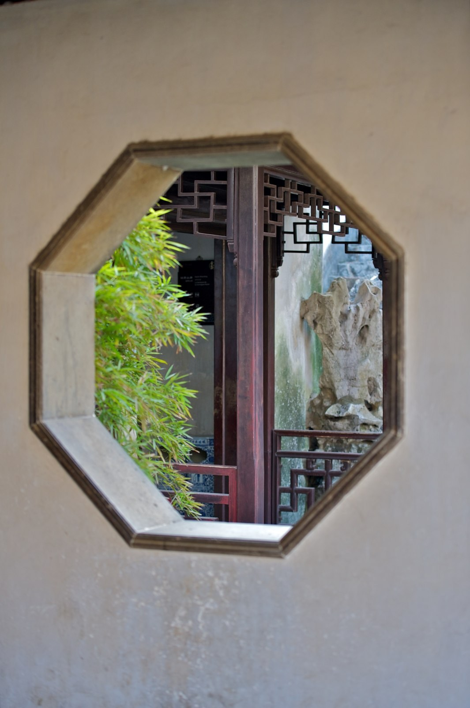
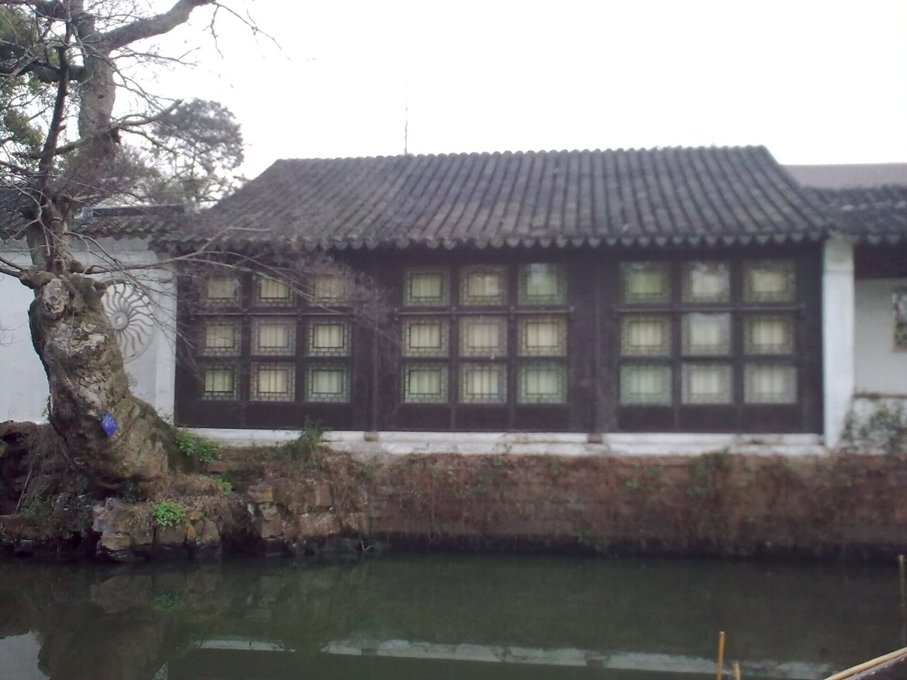
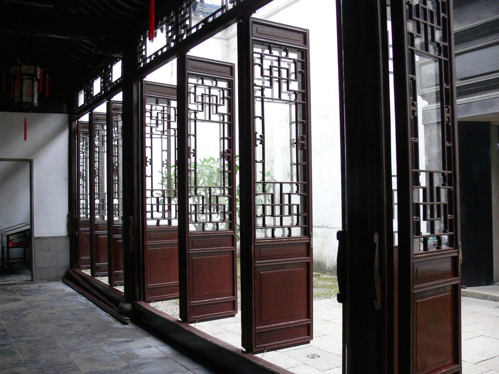
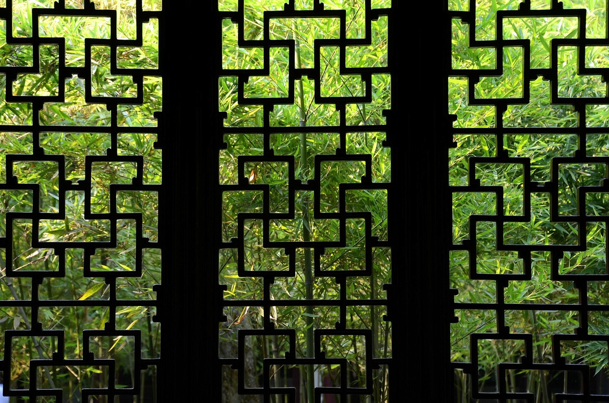
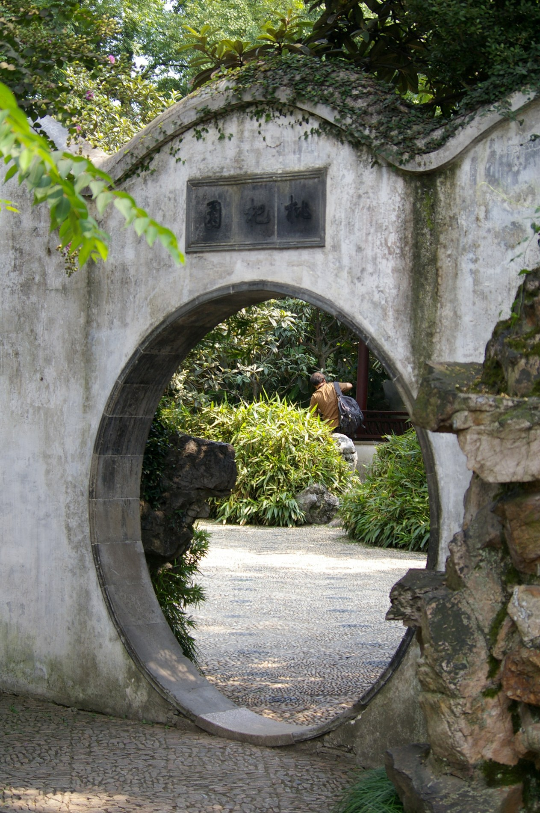

← 返回展览 / Back to exhibition每一扇窗，都有出处。
Every window has a source.
查核日期 / Checked: 2026-10-20。地点来自摄影者的文件说明，非凭图猜测。照片是实景记录；模型是解释性复原；中英文讲解与教学叠框是本展原创说明。
Locations follow the photographer’s file descriptions. Photographs document real places; models are interpretive reconstructions. Bilingual scripts and framing overlays are original teaching interpretations.
模型：先调查，再复原。
Model research & reconstruction
本次公开资源调查未获得可确认下载授权、适合课堂手机性能、且包含多个独立苏州花窗构件的扫描套组。因此采用三件照片依据的复原研习模型，保留四种传统母题教学示意。无一宣称为扫描或实物测绘。
This public-resource search did not obtain a licensed downloadable collection of individual Suzhou window scans suitable for mobile classrooms. Three photo-based studies and four motif studies are used. None is a scan or a measured survey.
亦检索了 Smithsonian 3D 与公开花窗/苏州摄影测量关键词，未找到可在本次交付中核实并取得的匹配套组；这不表示此类模型在其他机构不存在。
Smithsonian 3D and public Suzhou/window photogrammetry searches did not yield a matching obtainable collection in this investigation; this is not a claim that none exists elsewhere.
灯光、木纹、石材凹凸与粗糙度由本展程序生成，不是照片测得的物理材质。分层展示用于解释窗框、窗芯与风景的关系，不是修复拆卸工序。第三版 3D 展台不再添加摄影背景，只展示构件。
Lighting, grain, bump and roughness are authored procedural interpretations, not measured physical materials. Layer separation explains frame, lattice and view; it is not a restoration procedure. The version 3 stage shows components alone, without photographic backdrops.
实景摄影 / Real photographs
摄影许可允许本展在署名、链接许可、说明修改并遵守相同方式共享的条件下使用。保留以下署名清单即可继续维护或嵌入。
These licenses permit reuse with attribution, a license link, indicated changes and share-alike obligations. Keep this credit list with redistributed images and adaptations.

沧浪亭 · 山石 / Canglang Pavilion · rocks
© Chinatravelsavvy
原始文件页 / Original file ↗ · CC BY-SA 3.0
使用 / Use: 来源图录 / source gallery
修改 / Changes: 缩小、压缩、展示裁切 / resized, compressed, display-cropped. 图像改编遵循同一许可 / adaptations use the same license.

沧浪亭 · 池水与游廊 / Canglang Pavilion · pond and corridor
© Chinatravelsavvy
原始文件页 / Original file ↗ · CC BY-SA 3.0
使用 / Use: 第二版来源档案；第三版未采用 / version 2 archive; not used in version 3
修改 / Changes: 缩小、压缩、展示裁切 / resized, compressed, display-cropped. 图像改编遵循同一许可 / adaptations use the same license.

沧浪亭 · 亭与庭院 / Canglang Pavilion · pavilion
© Chinatravelsavvy
原始文件页 / Original file ↗ · CC BY-SA 3.0
使用 / Use: 来源图录 / source gallery
修改 / Changes: 缩小、压缩、展示裁切 / resized, compressed, display-cropped. 图像改编遵循同一许可 / adaptations use the same license.

网师园 · 窗景 / Master of the Nets Garden · window view
© Kramer1123
原始文件页 / Original file ↗ · CC BY-SA 4.0
使用 / Use: 第二版拼图档案 / version 2 puzzle archive
修改 / Changes: 缩小、压缩、展示裁切 / resized, compressed, display-cropped. 图像改编遵循同一许可 / adaptations use the same license.

拙政园 · 月洞门 / Humble Administrator’s Garden · moon gate
© G41rn8
原始文件页 / Original file ↗ · CC BY-SA 4.0
使用 / Use: 拼图 / puzzle
修改 / Changes: 缩小、压缩、展示裁切 / resized, compressed, display-cropped. 图像改编遵循同一许可 / adaptations use the same license.

留园 · 八角窗 / Lingering Garden · octagonal opening
© kevinmcgill from Den Bosch, Netherlands
原始文件页 / Original file ↗ · CC BY-SA 2.0
使用 / Use: 模型依据与图录 / model reference and catalogue
修改 / Changes: 缩小、压缩、展示裁切 / resized, compressed, display-cropped. 图像改编遵循同一许可 / adaptations use the same license.

沧浪亭 · 临水建筑 / Canglang Pavilion · waterside building
© Lamassu Design Gurdjieff (talk)
原始文件页 / Original file ↗ · CC BY-SA 3.0
使用 / Use: 来源图录 / source gallery
修改 / Changes: 缩小、压缩、展示裁切 / resized, compressed, display-cropped. 图像改编遵循同一许可 / adaptations use the same license.

沧浪亭 · 木格扇 / Canglang Pavilion · timber panels
© Gisling
原始文件页 / Original file ↗ · CC BY-SA 3.0
使用 / Use: 模型依据与图录 / model reference and catalogue
修改 / Changes: 缩小、压缩、展示裁切 / resized, compressed, display-cropped. 图像改编遵循同一许可 / adaptations use the same license.

沧浪亭 · 竹影木格 / Canglang Pavilion · bamboo through lattice
© Acot一杯茶
原始文件页 / Original file ↗ · CC BY-SA 4.0
使用 / Use: 摄影幕、模型依据、拼图 / photo interlude, model reference, puzzle
修改 / Changes: 缩小、压缩、展示裁切 / resized, compressed, display-cropped. 图像改编遵循同一许可 / adaptations use the same license.
第三版获批摄影 / Approved version 3 photography
用户于 2026-10-20 批准 P2 与 F1。P2 用于实景拼图，F1 只用于取景互动；3D 不使用摄影背景。
Approved on 2026-10-20: P2 for the puzzle and F1 for the separate framing experiment. The 3D stage has no photographic backdrop.

拙政园 · 月洞门
Moon gate, Humble Administrator’s Garden
Jakub Hałun · 2009-09-05
原作资料 / Original record · CC BY-SA 3.0
文件说明确认苏州拙政园；不额外将匾额或局部名称当作馆方核定地点。
Location confirmed by the file description: Humble Administrator’s Garden, Suzhou. The local scene is not assigned a further verified name.
处理 / Changes: 等比缩小、JPEG 压缩；网页渐显／视口取景 / Proportional resize, JPEG compression; page reveal or viewport framing.

拙政园 · 荷塘横卷
Lotus panorama, Humble Administrator’s Garden
Zossolino · 2015-09-24
原作资料 / Original record · CC BY-SA 4.0
苏州拙政园；摄影者说明明确，并附拍摄坐标。具体亭名不另作推定。
Location confirmed by the photographer: Humble Administrator’s Garden, Suzhou. No particular pavilion name is inferred.
处理 / Changes: 等比缩小、JPEG 压缩；网页渐显／视口取景 / Proportional resize, JPEG compression; page reveal or viewport framing.
文徵明笔下的拙政园 / A painted garden
《拙政园图诗册》，文徵明，1551，纸本水墨，八开册，大都会艺术博物馆，1979.458.1a–ii。以下为同册三张不同册页，非三部独立作品。画面描述不另作作品题名。馆方确认题材为拙政园，但历经改建，不能逐一对应今日园址。
Garden of the Inept Administrator, Wen Zhengming, 1551, album of eight leaves, ink on paper, The Met, 1979.458.1a–ii. These are three leaves from one album. Descriptions are not separate artwork titles. The historic garden is identified; the scenes cannot be mapped confidently to its present-day locations.
馆方标注 Public Domain，按 The Met Open Access / CC0 使用。页面做等比缩放、压缩与渐显，未移动印章或题跋，未把画作作为窗构造测绘依据。
The Met identifies the images as Public Domain under its Open Access / CC0 policy. Images are proportionally resized, compressed and revealed on screen. Seals and inscriptions are not rearranged; paintings are not measured construction references.

《拙政园图诗册》册页选一
Garden of the Inept Administrator, selected leaf
文徵明 / Wen Zhengming（1470–1559） · 1551
原作资料 / Original record · Public Domain · The Met Open Access / CC0
馆方确认整册题材为苏州拙政园；不能把这幅对应为今天某处实景。分景题名未逐叶核定，以册名与图像编号识别。
The album depicts the historic Humble Administrator’s Garden; the present-day location and individual scene title are not asserted. Identify the leaf by its image ID.
处理 / Changes: 等比缩小、JPEG 压缩；网页渐显／视口取景 / Proportional resize, JPEG compression; page reveal or viewport framing.
The Metropolitan Museum of Art, Gift of Douglas Dillon, 1979; 1979.458.1a–ii.
Image ID: DP235628_CRD

《拙政园图诗册》册页选二
Garden of the Inept Administrator, selected leaf
文徵明 / Wen Zhengming（1470–1559） · 1551
原作资料 / Original record · Public Domain · The Met Open Access / CC0
题材可确认至历史上的拙政园；今日具体位置不可确认。分景题名未逐叶核定。
The album depicts the historic Humble Administrator’s Garden; the present-day location and individual scene title are not asserted. Identify the leaf by its image ID.
处理 / Changes: 等比缩小、JPEG 压缩；网页渐显／视口取景 / Proportional resize, JPEG compression; page reveal or viewport framing.
The Metropolitan Museum of Art, Gift of Douglas Dillon, 1979; 1979.458.1a–ii.
Image ID: DP235621

《拙政园图诗册》册页选三
Garden of the Inept Administrator, selected leaf
文徵明 / Wen Zhengming（1470–1559） · 1551
原作资料 / Original record · Public Domain · The Met Open Access / CC0
题材可确认至历史上的拙政园，今日具体位置不可确认。分景题名未逐叶核定。
The album depicts the historic Humble Administrator’s Garden; the present-day location and individual scene title are not asserted. Identify the leaf by its image ID.
处理 / Changes: 等比缩小、JPEG 压缩；网页渐显／视口取景 / Proportional resize, JPEG compression; page reveal or viewport framing.
The Metropolitan Museum of Art, Gift of Douglas Dillon, 1979; 1979.458.1a–ii.
Image ID: DP235624
文化资料与原创讲解
Cultural evidence & interpretation
UNESCO · Classical Gardens of Suzhou — 世界遗产背景 / heritage context.
苏州市园林局《沧浪亭》 — 复廊、借景与 108 式花窗的资料依据 / double corridor, borrowed views and 108 window designs.
苏州市园林局《木窗的匠心和工艺》 — 木窗、自然取意与工艺的解读依据 / timber window craft and natural motifs.
苏州地方志《奇妙精巧的苏州古典园林的漏窗艺术》 — 漏窗材料与构造 / materials and construction.
“框景、借景、步移景异、虚实相生”的网页表述、翻译、问答、30 秒解说与窗笺均为本展原创教学解释，非历史原文。 / Explanations, translations, quiz, 30-second script and postcard are original teaching interpretations, not historical quotations.
参考体验：借鉴方法，独立实现。
Experience references
《是谁在弹古琴？》 — 实际查看纸上谱字、青灰与朱红、声音提示和载入段；当前浏览器提示部分媒体无法播放。借鉴纸面节奏与安静色彩，不复制音频或图像。
David Whyte Experience / Immersive Garden case — 第三版实际查看水彩树形、诗句分组、场景叠合与滚动推进；借鉴渐显、层次和留白，不复用画作、诗句、声音或代码。
The Boat · SBS — 实际查看雨线、声音入口与深色画面；借鉴场景密度变化和分段叙事，避免强制滚动劫持。
Garden Eight — 实际查看大字、低饱和三维形体与空白关系；借鉴展品与字体主次。
Google Arts & Culture · Puzzle Party — 依据真实图片还原、难度选择、原图揭示的方法，独立实现照片分块交换。支持单设备，未实现在线多人协作。
References inform pacing, hierarchy and interaction. No reference-site artwork, music or code is reused. Our puzzle is a single-device photo swap puzzle, not an online multiplayer replica.
代码与字体 / Code & type
Three.js · MIT，本地打包 / bundled locally.
Noto Serif SC · SIL Open Font License，从 官方仓库 下载完整字体后本地裁剪；无运行时字体请求。 / downloaded from the official repository and subset locally; no runtime font requests.
程序材质为原创生成。照片依据的几何研究按上表对应 CC BY-SA 许可分发；图片许可不自动覆盖整站代码。 / Procedural textures are original. Photo-based geometries follow the stated share-alike licenses; image licenses do not automatically license the entire application.
← 返回展览 / Back to exhibition · 嵌入示例 / Embed example →
苏州市园林局《建筑》 / Garden architecture — 第三版材料、窗形与光影说明的补充依据 / additional context for materials, outlines and shadows.